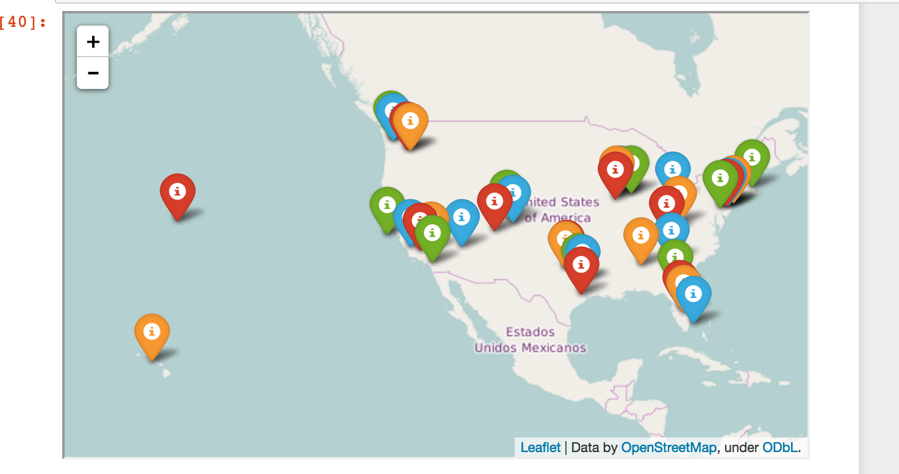
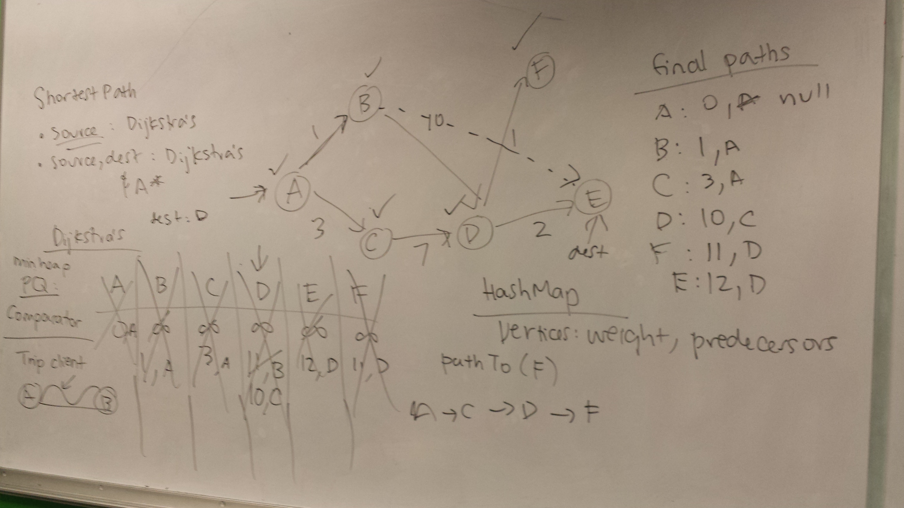
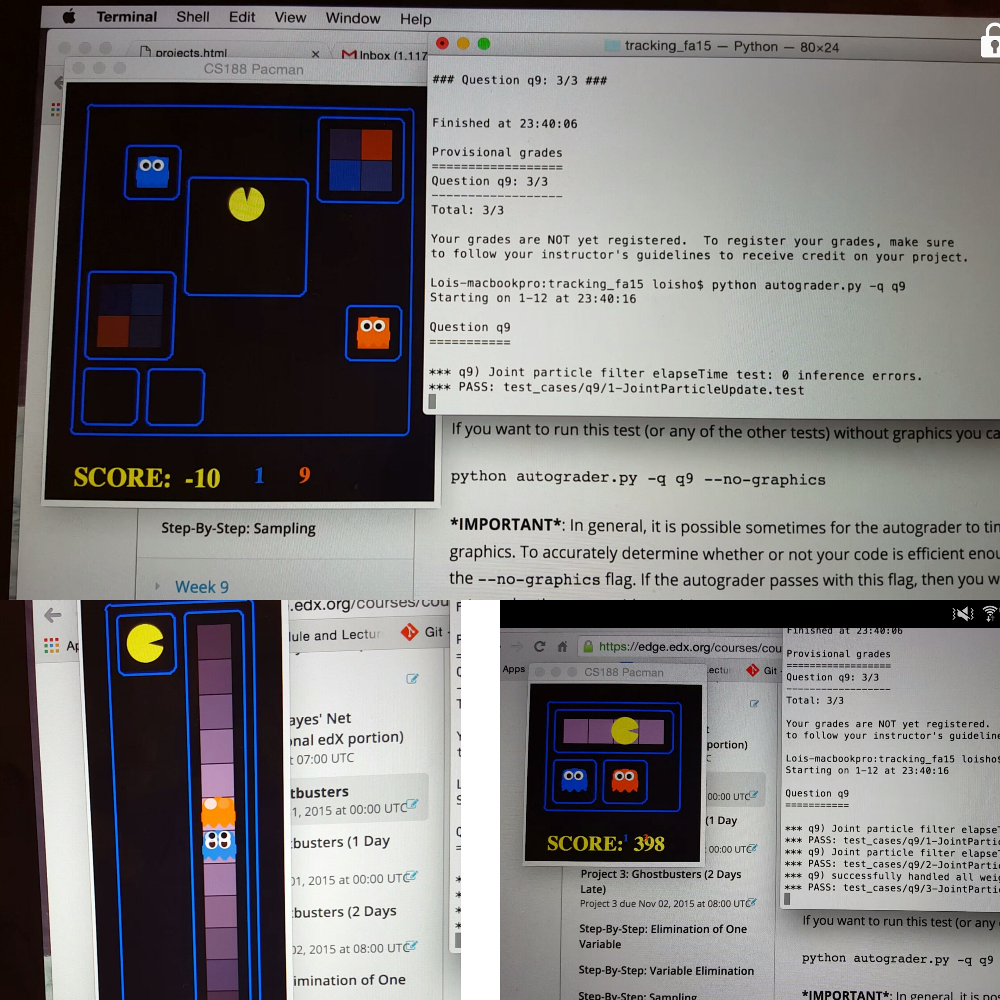

Projects
Scalable Data Analytics and Machine Learning
CS186, Spring 2016
Used K-means algorithm to categorize campaign contributions by geographic location from data disclosed to the Federal Election Commission (FEC) for election in 2016. Performed data analytics on about 432 MB of FEC data. Implementation includes Distributed Reservoir Sampling for scalability and spark sql to process FEC data.
Right image: visualization of campaign contributions to different candidates as geographical clusters.

Trip Finder, Java
CS61B, Fall 2014
I implemented a general graph package to support two clients: a shortest route finder and a version of MAKE. The shortest route trip finder outputs directions for the shortest path between two points given a map file. The version of MAKE used the graph package to rebuild a set of targets given the prerequisites.
For the graph package, I implemented several algorithms including directed, undirected graph, BFS, DFS, A*, Dijkstra's algorithm, shortest path, and traversal module.

Ghostbusters, Python
CS188, Fall 2015
In this game, Pacman needs to locate and eat the invisible ghost given the noisy distance. The blocks of color indicate where each ghost could be. This helps us have a better estimate of the position of the ghost. After Pacman eats the ghost, the ghost appears in the jail, which is seen as the boxes outside.
My partner and I implemented algorithms for performing both exact and approximate inference using Bayes nets. In addition, to track multiple ghosts, we implemented the joint particle filter algorithm.

Personal Website
Web Design, Fall 2015
My website is a work in process as I will implement different designs and incorporate features such as hovering over my picture in the homepage, a multimedia blog, and testimonial section. As I finish my bachelor's degree, gain more industry experience, and undertake more back-end projects, I will constantly update more content.
I built this website from scratch using HTML, CSS, and JavaScript/jQuery.